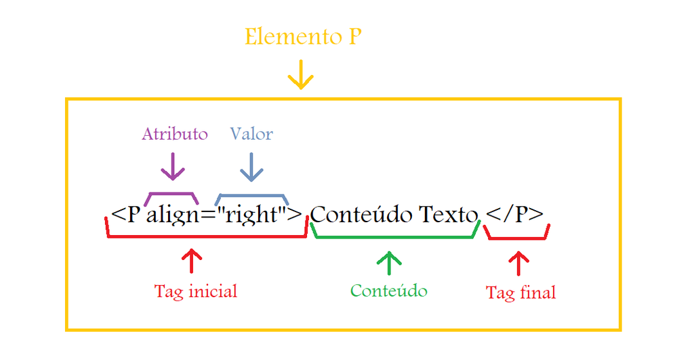

Em 1945, Vannevar Bush, propôs em um artigo intitulado As we may think a idéia para um sistema de armazenamento de informações o qual ele denominou MEMEX. Bush idealizou uma máquina que teria a capacidade de armazenar informação textual e gráfica, informações essas com a capacidade de serem relacionadas por meio de ligações dinâmicas ou seja links a quaisquer outras informações. Até então o termo "hypertext" não existia. Foi em 1965 que Ted Nelson, em um artigo publicado no livro "Literary Machines" cunhou este termo. O primeiro sistema baseado em hipertexto foi desenvolvido em 1967 por uma equipe liderada por Andries van Dam na "Brown University". A pesquisa foi coordenada pela IBM e a primeira implementação hipertexto, Hypertext Editing System, foi executada em um mainframe IBM/360. Em 1987 Bill Atkinson criou o Hypercard, sistema hipertexto feito para facilitar a criação de aplicações em hipertexto. Dentre suas implementações haviam os gráficos bitmaps, campos de formulário, script e pesquisa rápida de texto. Em 1989, nos laboratórios do CERN, Berners-Lee e Robert Caillau lançaram as idéias de um sistema que poderia ser acessível por diferentes plataformas de computadores, realidade existente à época no CERN. Nascia então a concepção do HTML, bem omo sua utilização junto com o protocolo HTTP.

O elemento é o codigo fonte das páginas, são a base da construção da página HTML, no qual podemos construir estruturas de tabelas, listas, parágrafos e etc..
Tag's são conjuntos de caracteres que formam um elemento, e através dessas tag's que o navegador deverá estruturar nossa página HTML.
Quando utilizamos as tag's HTML, podemos atribuir um comportamento para essa tag, é o que chamamos de atributo, para que a mesma possa se comportar conforme desejamos. Há atributos Globais (que funciona para todas as tags) e Específicos (que são direcionados para cada tag).
Confira os links abaixo para se aprofundar cada vez mais nessa trilha fantástica que o HTML tem a oferecer.